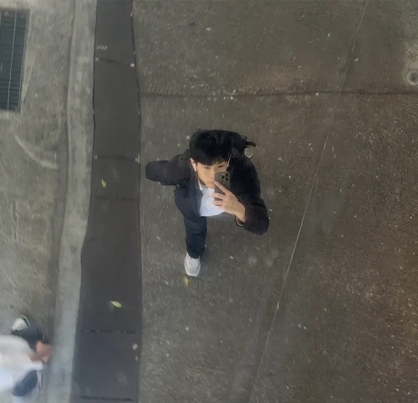
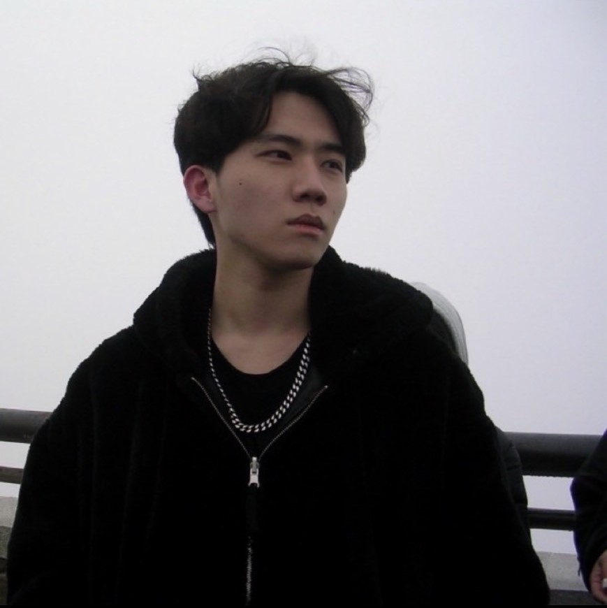
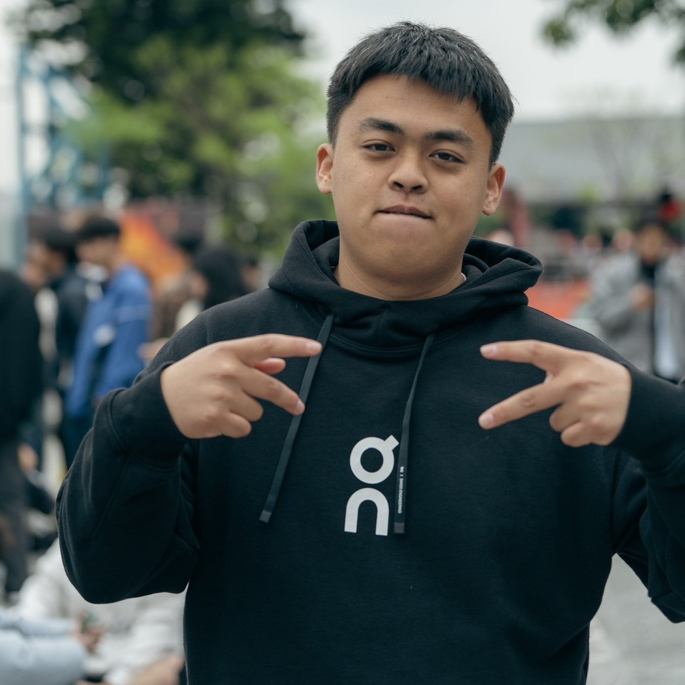

關於傳傳團隊
我們是一群來自資管系的學生，致力於解決校園二手書流通不易的問題。
透過「傳傳」，我們希望讓每一本書都能傳到下一個愛它的主人，
減少資源浪費，讓知識在校園中自由流動。

楊育霖
組長 / 程式開發
負責網站核心架構、前後端邏輯與動效設計。也是傳傳的超級管理員。
「這次專題讓我深刻體會到『從零到有』的艱辛與成就感。身為組長，除了要負責核心的購物車邏輯和 LocalStorage 資料串接，更要協調大家的進度。最大的挑戰是處理非同步的資料狀態，像是庫存扣除後的同步問題，但解決後看到功能順利運作，真的非常有成就感！」

藍子詒
視覺設計
定調網站的森林系風格，負責配色規劃與素材收集，讓網站充滿質感。
「我負責網站整體的視覺定調，選擇了森林系配色來呈現二手書『再生、環保』的理念。在設計過程中，學習到如何運用 CSS Variable 來管理全站顏色，以及如何微調細節讓使用者體驗更好。看到原本生硬的程式碼變成了漂亮的介面，覺得很有趣！」

劉彥辰
企劃與測試
規劃購物流程與使用者體驗，並負責系統測試，確保功能運作順暢。
「我的工作是確保網站『真的能用』。在測試過程中發現了很多開發者沒注意到的 Bug，像是沒登入能不能買、庫存歸零會怎樣等等。透過這次專題，我了解到流程規劃的重要性，一個好的網站不只要好看，更要讓使用者操作順暢無阻。」

夏誥均
架構與文案
繪製網站 Sitemap 架構圖，協助文案撰寫與版面細節調整。
「繪製 Sitemap 和規劃頁面動線是我的主要任務。一開始我們對功能有很多想像，但實際執行時發現需要取捨。我學到了如何將複雜的需求轉化為清晰的架構圖，並協助撰寫文案，讓網站的語氣更貼近大學生族群。這次合作讓我學到很多溝通技巧。」